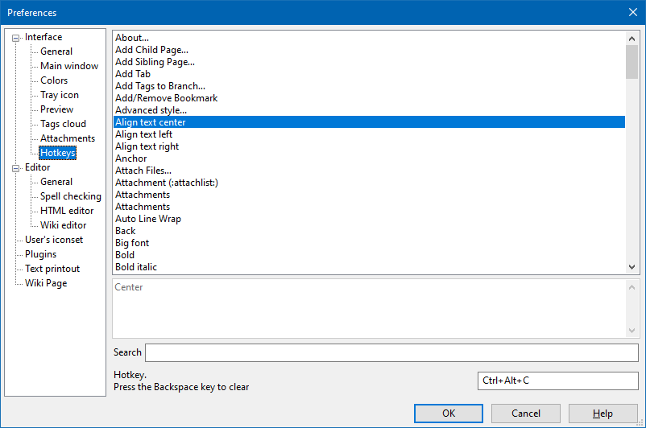

Interface - Hotkeys

This section controls allow to set or to modify hot keys for various program functions. The top pane of the dialogue contains list of all actions. Description for the selected action is shown in the middle pane. The "Search" field can be used to find specific actions quickly. The undermost field allows to set or to modify hotkey for the selected action.